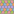
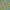

Edge markings
Give each edge of a tile a mark, and allow two tiles to meet only where their marks fit. The shape is unchanged; what it can do is not. This is how the Spectre's curved edges work, and how Wang tiles work. Here the question is narrow: how far can markings push a simple tile's isohedral number?
Four kinds of mark
A mark on a shared edge is seen by the two tiles from opposite sides, so their views differ by a half-turn about the edge's midpoint; a reflected tile sees its marks mirrored. Which symmetries the mark's own profile has therefore determines the matching rule completely, and there are four cases besides the plain edge.
| mark | its profile is symmetric under | fits | mirror image is | can be carved into the edge? |
|---|---|---|---|---|
| jigsaw tab | reflection across the edge's bisector | its opposite: bump into dent | itself | yes — the familiar puzzle tab |
| S-tab | half-turn about the edge midpoint | itself | a Z-tab, which it refuses | yes — an S-shaped curve |
| arrow | reflection in the edge's own line | its opposite | its opposite | no — a curve symmetric about its chord is the chord |
| asymmetric tab | nothing | its opposite | a different tab (four in all) | yes — a lopsided bump |
| colour | everything | itself | itself | no — only the straight edge qualifies |
The distinction in the last column matters for what a result means. A carvable rule describes an ordinary unmarked shape with wiggly edges. An arrow or a colour cannot be realised that way: results for them are about marked tiles.
The survey
Each row takes one prototile and one rule, assigns marks to its edges in every possible way, and finds the isohedral number of each marked tile. “Labels” counts the plain edge plus the marks available. Markings related by a symmetry of the prototile or a renaming of the marks are counted separately.
| prototile | rule | edges | labels | markings | k = 1 | k = 2 | k = 3 | k = 4 | k = 5 | no tiling | searched to k |
|---|---|---|---|---|---|---|---|---|---|---|---|
| hexagon | jigsaw | 6 | 3 | 729 | 129 | 0 | 0 | 0 | 0 | 600† | 8 |
| hexagon | jigsaw | 6 | 5 | 15 625 | 785 | 0 | 0 | 0 | 0 | 14 840† | 6 |
| hexagon | S-tab | 6 | 3 | 729 | 615 | 12 | 0 | 0 | 0 | 102† | 8 |
| hexagon | colour | 6 | 3 | 729 | 525 | 90 | 0 | 0 | 0 | 114† | 6 |
| hexagon | colour | 6 | 4 | 4 096 | 2 416 | 396 | 0 | 0 | 0 | 1 284† | 6 |
| hexagon | arrow | 6 | 3 | 729 | 195 | 102 | 0 | 12 | 24 | 396† | 8 |
| hexagon | arrow | 6 | 5 | 15 625 | 1 013 | 516 | 0 | 48 | 48 | 14 000† | 10 |
| hexagon | asymmetric | 6 | 5 | 15 625 | 989 | 108 | 0 | 0 | 0 | 14 528† | 10 |
| dihex | arrow | 10 | 3 | 59 049 | 2 833 | 392 | 40 | 0 | 0 | 55 784† | 8 |
| square | jigsaw | 4 | 3 | 81 | 19 | 0 | 0 | 0 | 0 | 62† | 8 |
| square | arrow | 4 | 3 | 81 | 81 | 0 | 0 | 0 | 0 | 0 | 6 |
| square | colour | 4 | 3 | 81 | 81 | 0 | 0 | 0 | 0 | 0 | 6 |
| square | colour | 4 | 4 | 256 | 256 | 0 | 0 | 0 | 0 | 0 | 6 |
| domino | jigsaw | 6 | 3 | 729 | 137 | 0 | 0 | 0 | 0 | 592† | 8 |
| domino | jigsaw | 6 | 5 | 15 625 | 881 | 0 | 0 | 0 | 0 | 14 744† | 6 |
| domino | S-tab | 6 | 3 | 729 | 629 | 0 | 0 | 0 | 0 | 100† | 8 |
| domino | arrow | 6 | 3 | 729 | 729 | 0 | 0 | 0 | 0 | 0 | 6 |
| domino | colour | 6 | 3 | 729 | 729 | 0 | 0 | 0 | 0 | 0 | 6 |
| I-tromino | jigsaw | 8 | 3 | 6 561 | 581 | 48 | 0 | 0 | 0 | 5 932† | 8 |
| L-tromino | jigsaw | 8 | 3 | 6 561 | 423 | 80 | 0 | 0 | 0 | 6 058† | 8 |
| L-tromino | S-tab | 8 | 3 | 6 561 | 3 159 | 30 | 8 | 0 | 0 | 3 364† | 4 |
| L-tromino | arrow | 8 | 3 | 6 561 | 1 917 | 172 | 4 | 8 | 0 | 4 460† | 4 |
| O-tetromino | jigsaw | 8 | 3 | 6 561 | 707 | 32 | 0 | 0 | 0 | 5 822† | 8 |
| triangle | jigsaw | 3 | 3 | 27 | 7 | 0 | 0 | 0 | 0 | 20 | 8 |
| triangle | arrow | 3 | 3 | 27 | 27 | 0 | 0 | 0 | 0 | 0 | 6 |
| triangle | colour | 3 | 3 | 27 | 27 | 0 | 0 | 0 | 0 | 0 | 6 |
| kite | jigsaw | 4 | 3 | 81 | 9 | 0 | 0 | 0 | 0 | 72 | 8 |
| kite | arrow | 4 | 3 | 81 | 27 | 0 | 0 | 0 | 0 | 54 | 8 |
| Cairo pentagon | jigsaw | 5 | 3 | 243 | 15 | 0 | 0 | 0 | 0 | 228 | 8 |
| Cairo pentagon | arrow | 5 | 3 | 243 | 15 | 6 | 0 | 0 | 0 | 222 | 8 |
| rhombus | jigsaw | 4 | 3 | 81 | 9 | 0 | 0 | 0 | 0 | 72 | 8 |
| rhombus | arrow | 4 | 3 | 81 | 9 | 24 | 0 | 0 | 0 | 48 | 8 |
| rhombus | asymmetric | 4 | 5 | 625 | 25 | 0 | 0 | 0 | 0 | 600 | 6 |
| floret pentagon | jigsaw | 5 | 3 | 243 | 9 | 0 | 0 | 0 | 0 | 234 | 8 |
| floret pentagon | arrow | 5 | 3 | 243 | 9 | 0 | 0 | 0 | 0 | 234 | 8 |
| prismatic pentagon | jigsaw | 5 | 3 | 243 | 9 | 0 | 0 | 0 | 0 | 234 | 8 |
| prismatic pentagon | arrow | 5 | 3 | 243 | 27 | 18 | 0 | 0 | 0 | 198 | 8 |
| tan | jigsaw | 3 | 3 | 27 | 3 | 0 | 0 | 0 | 0 | 24 | 8 |
| tan | arrow | 3 | 3 | 27 | 27 | 0 | 0 | 0 | 0 | 0 | 6 |
| drafter | jigsaw | 3 | 3 | 27 | 1 | 0 | 0 | 0 | 0 | 26 | 8 |
| drafter | arrow | 3 | 3 | 27 | 27 | 0 | 0 | 0 | 0 | 0 | 6 |
| pon | jigsaw | 3 | 3 | 27 | 3 | 0 | 0 | 0 | 0 | 24 | 8 |
| pon | arrow | 3 | 3 | 27 | 9 | 0 | 0 | 0 | 0 | 18 | 8 |
What the survey shows
Jigsaw tabs obey a counting law. Every bump must meet a dent, and with a mirror-symmetric tab a reflected tile has the same bumps and dents as an unreflected one. So a marking with unequal numbers of the two can never tile. This parity lemma accounts for most of the “no tiling” entries in the jigsaw rows, and under this rule every unit prototile tested is isohedral or nothing.
Arrows escape the law. A reflected arrow reads as its opposite, so tilings can balance their marks by mixing mirror images. On the regular hexagon this takes the isohedral number from one to as high as five: of the 729 three-label arrow markings, twelve need four orbits and twenty-four need five, while none needs exactly three. A second pair of arrows multiplies the number of such markings without raising the ceiling.
The prototile sets the ceiling. More edges do not help: the ten-edge dihex stops at three, and richer alphabets on the hexagon mostly produce non-tilers. A square, a triangle or a domino is unmoved by any arrow or colour marking — every one still tiles isohedrally. Among rules that can be carved into an edge, the highest isohedral number found is three, from S-tabs on the L-tromino.


“No tiling found” is not “no tiling”
A search for periodic tilings up to k orbits that finds nothing has not shown that nothing exists. The marked tile might need more orbits. Or, since a marked tile is a Wang tile in disguise, it might tile only aperiodically — and then no periodic search would ever succeed. Surround arguments, which settle this for plain shapes, do not help: these marked tiles surround easily, and whatever stops them is not local.
So the 142 782 markings in the daggered entries above were attacked with methods that prove non-tiling outright:
| method | markings settled | idea |
|---|---|---|
| parity | 46 848 | unequal bumps and dents under the jigsaw rule |
| strip | 95 842 | a tiling of the plane restricts to an infinite strip of fixed width; rows of the strip are states of a finite graph, and if that graph has no bi-infinite path there is no tiling |
| patch search | 52 | no legal arrangement covers a disc around the origin |
| SAT | 40 | a 12 × 12 patch cannot be covered; unsatisfiability is the proof |
| left open | 0 |
Every one is a genuine non-tiler. None is aperiodic, and none hides a high isohedral number: for these prototiles and rules, the tables above are complete. The last forty fill an 8 × 8 patch comfortably and fail only at 12 × 12, far beyond the reach of a strip or a disc — a reminder that “fills a large patch” is weak evidence of tiling. Those forty rest on four independent SAT solvers agreeing; exporting checkable proofs through the solver library proved unreliable for them, and is still to be done properly.
The methods are complementary. On plain polyforms the strip test proves almost nothing and surround search proves almost everything; on marked tiles it is the other way round. Plain shapes fail to tile for local reasons, marked tiles for global ones.